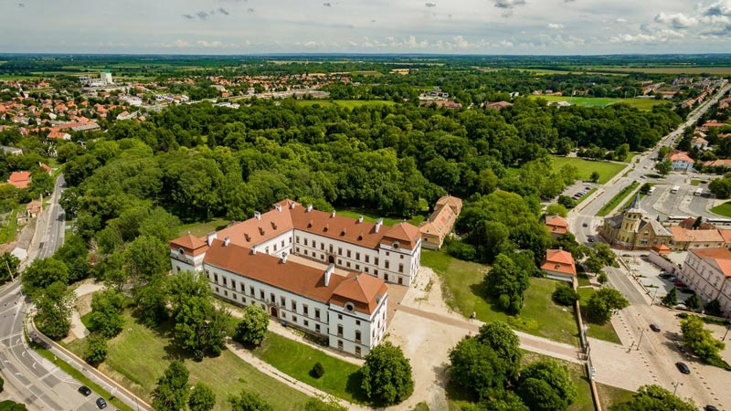
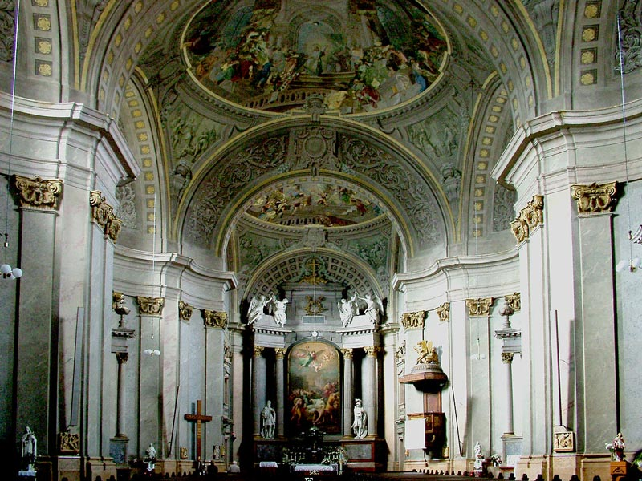
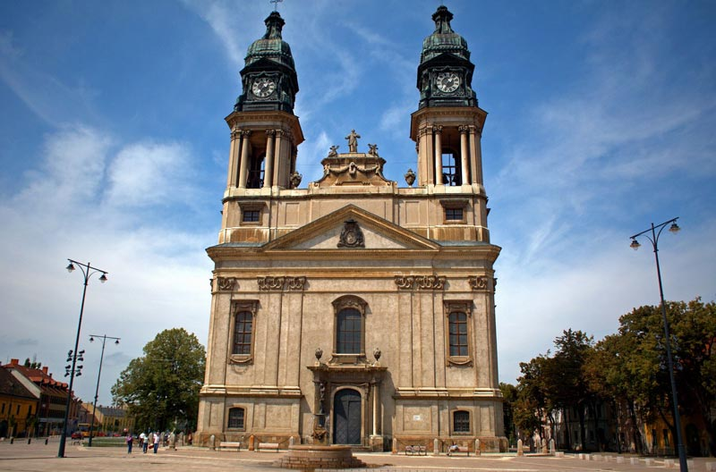
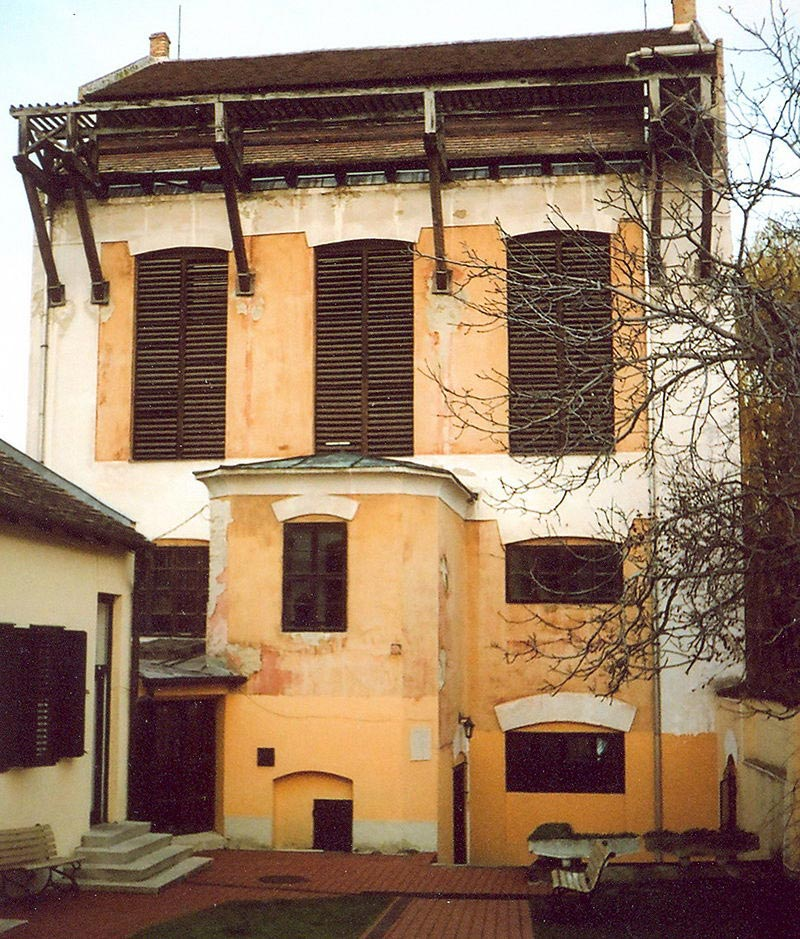
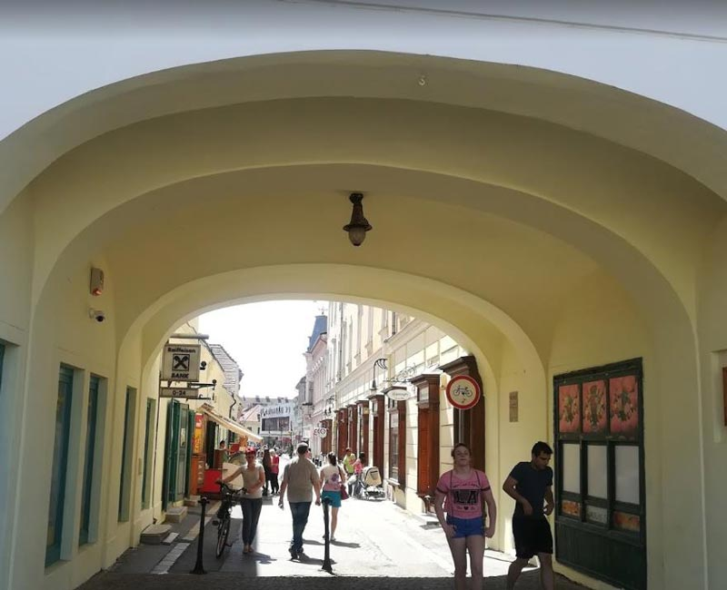
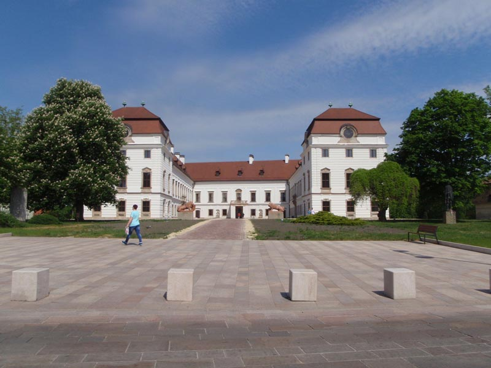

特色旅游
1日游
2-4日游
5-10日游
精品长线旅游
地址：匈牙利 布达佩斯 Budapest-Keleti, 1087
电话：0036-30-9574162
邮件：rrjourneys@gmail.com
网站：http://www.rrjourneys.com
【美景】
帕波是是维斯普雷姆县第二大人口居住区。
帕波以巴伐利亚骑士帕波的名字命名，中世纪德国血统遍布整个城市。
该住区曾是行政的中心和大主教的总部，教皇在主广场建造了一座具有代表性的大教堂。
【美食】
Goulash牛肉炖汤
Libamáj 鹅肝
Lángos特色油饼
Toltott Kaposzta 圆白菜肉丸
Halászlé 鱼汤
Ujhazi Tyukhuslevesi 家常老鸡汤
Kurtoskalacs 烟囱卷面包
Egri Bikavér埃格尔公牛血葡萄酒
帕波
帕波是匈牙利维斯普雷姆州的城市，距离首府维斯普雷姆40公里，面积91.47平方公里，人口32,473，其中约六成居民是天主教徒。 是维斯普雷姆县第二大人口居住区。 这座城市以巴伐利亚骑士帕波的名字命名，据说他是这座城市所在地庄园的领班。根据最公认的假设，在吉齐拉王与王后一起抵达匈牙利，征服弗兰克伯爵时代之前，帕波就住在这里，教皇家族可能起源于他，中世纪帕波的德国血统遍布整个城市。 据最著名的故事是已经被马赛厄斯·贝尔于1735记载的，国王斯蒂芬在这里遇到了正返回罗马的主教阿斯特里克。除夕之夜教皇赐给了王冠。人民出于对大主教的尊重和感激之情，将这座新命名的城市命名为帕波。教区牧师加斯帕·蓬格拉兹在1733年记录了同一句话。据他说，这座城市的名字来自罗马教皇的代表，罗马教皇来到这里安息。 根据另一个传说，冠名是盖萨王子的儿子，后来的史蒂芬国王，在婴儿时曾说，父亲盖萨的父爱会给这座城市起个欢乐的名字。也有传说由于这座城市建在山上，因此从驼峰这个词衍生出了帕波这个名字。 罗马时代，通往松博特海伊和杰尔的道路一直通向此地，但并未建立定居点。新石器时代，该地区也发掘了凯尔特人的考古发现。1214年的宪章中首先提到了该定居点。安德拉斯·诺拉普在描述遗产时，提到了“来自教皇的道路”。该住区已经是行政的中心和大主教的总部。19世纪引入了医院，它被赋予了城市风貌。教皇在主广场早期教堂的所在地建造了一座具有代表性的大教堂。它有自己的印章，镇上有集会。当时是维斯普雷姆县人口最多的住区。 塔波卡溪流对该镇的发展至关重要，曾经是该地区十几家工厂的重要动力来源。在19世纪末，由于铝土矿的生产，溪流消退了。 从18世纪中叶开始，城市的作用开始扩大。从那时起学校就开始运转。19世纪中叶，城市已经是一个享有盛誉学堂的城市，一所举世闻名的学校最初成立于1531年。该校培育了桑多·佩特菲和莫尔·乔凯等。类似声誉的其它学校，宝莲成立于1638年，现在国家持股的伊什特万高中等。 目前生活在加拿大的克鲁格家族的蓝色绘画车间于1786年在帕帕成立。塔波卡溪水提供给工厂资源。直到19世纪，蓝色绘画都是手工完成的，后来又由蒸汽机完成，这是匈牙利最好的绘画之一。克鲁格家族的车间和手工艺品从父辈传到了儿子，直到1945年国有化期间关闭了他们的私人企业。自1962年以来，该遗址就拥有一个博物馆，展示着历史悠久的手工艺。 2011年和对主广场进行改建。2015年这座翻新的埃斯泰尔哈齐城堡主楼的移交于4月17日举行。2019年9月28日埃斯泰尔哈齐城堡的手工锻铁大门被移交：罗马教皇重生的象征。  景点：大教堂 原教堂于1751年的数场瘟疫中被大火烧毁。大教堂始建于1774年，建筑师雅卡布·费尔纳，由埃格尔主教伯爵卡罗里·埃斯泰尔哈齐主持，后由约瑟夫·格罗斯曼领导，教堂于1795年完工。 由于其规模较大，该教堂也被称为大厅教堂，它不再完全具有巴洛克风格的过度装饰风格，但仍带有强烈的烙印。建造时该教堂已从巴洛克风格中倾向于古典主义（所谓的辫子风格，也称为古典主义晚期巴洛克风格）。其长度为42米，宽度为22米，内部高度为24米。两座塔的高度达到72米，但是根据一项新的测量结果，实际高度为57.17米（不包括十字架），因此比书中的高度低15米。
 教堂覆盖墙壁的大理石从淡红色到淡黄色，天花板的壁画是弗朗兹·安东·毛伯特在1781- 1783年间创作的。这三个圆顶壁画，边界画和主要祭坛画一起讲述了圣史蒂芬生平。这三个圆顶展示了圣史蒂芬及其同伴的奉献精神（第一），他们的讲道（第二）和圣人的接纳（第三）。烈士在耶路撒冷的命运由石头完成，是在主祭坛上完成的，这是休伯特·莫勒的作品。 教堂中图像的主题与罗马圣斯特凡诺·罗通多教堂中的图像非常相似。主坛的大理石雕像是圣史蒂芬和圣拉迪斯劳斯，同样的雕刻有旧的悔椅，洗礼的字体和讲坛。教堂有四个侧面的祭坛，这是詹诺斯·齐克勒的作品。莫尔伯特施还画了圣器壁画，圣母玛利亚教堂和两个唱诗班。目前圣母玛利亚教堂及上方的神殿中的展览，可以看到祭坛上的烈士圣马丁全长遗物。在楼上的空间中，您可以看到埃斯泰尔哈齐的服装展览。教堂的青铜洗礼字体和黎巴嫩雪松雕刻的讲坛是特别美丽而珍贵的作品。  景点：蓝色绘画博物馆 蓝色绘画博物馆几乎完美地展示了当时著名的工艺蓝色绘画，位于原克鲁格工厂。该工厂运营至1956年，此后建筑群和所有设备被列为古迹，并于1962年作为博物馆开放。1983年，在克鲁格公司成立200周年之际，该建筑进行了翻新。 博物馆保留了前工厂的材料，收集了与蓝色绘画有关的其它产品，及蓝色绘画工作坊的作品。常设展览展示克鲁格家族的历史和对蓝色油漆技术细节的描述。1770年后蓝色绘画，蓝染广为流传。 卡尔·弗里德里希·克鲁格该公司的创始人-他们的祖先已经从事织物染色- 1783年来到匈牙利的萨克森，并在萨尔瓦尔建立一个蓝色的染色车间。他于1786年移居帕波，在至今仍保留的建筑物的场地上建立了自己的工厂。当时帕波已经有4-5家类似的工厂，这表明对这些“蓝染”材料的需求非常高。 到达萨尔瓦尔之前，克鲁格参观了德国，瑞士和奥地利等城市，并获得了很多专业经验。他的儿子卡罗莉·克鲁格效仿了父亲的做法，也去了欧洲的许多地方，在1809年的样本书中，他收集了72件纺织品的集合以及制作它们所需的配方。为了方便重复配方，他用符号代替了每种化学药品和植物的名称。 卡洛莉·克鲁格于1895年去世。他的儿子费伦茨克鲁格，接手工厂的管理，他的母亲利用当时的经济繁荣，继续了他父亲开始的现代化和购买新机器的工作。在工厂成立100周年之际，1883年产量飞涨，它被冠以“布劳德鲁克·法贝雷”的头衔，跻身领先企业之列。在19世纪和20世纪之交，工厂得到了进一步扩展。 费伦茨·克鲁格于1923年去世。他是家庭中从事该职业的最后一位男性成员。他的女儿于1923年接管了该工厂的管理工作，直到1945年。该工艺从祖先到克鲁格家族进行了七代传承。1956年该建筑被宣布为原始设备和国家援助的纪念碑，2010年底由布达佩斯纺织博物馆所属的纺织博物馆基金会管理，于2011年初由帕波市接管。  景点：格里夫酒店 在福特尔和福特卡的拐角处耸立着一栋以埃斯泰尔哈齐家族纹章中的鸟命名的建筑：格里夫酒店，大厅里有大型舞会，表演和音乐之夜。诗人作家桑多·基斯法卢迪的后继配偶罗兹·塞格迪曾在这跳舞，1842年一位罗马教皇的学生桑多·佩特菲写下了他的诗《色彩与真实》。政权更迭后，这座建筑已恢复原貌，并再次接待了酒店客人，其前舞厅里的镜子使夜总会的收益倍增。  景点：埃斯泰尔哈齐城堡 埃斯泰尔哈齐城堡位于市中心的主要广场，前身是加莱人在15世纪上半叶建造的城堡。该城堡在土耳其统治期间进行了修建。罗马教皇庄园于1626年成为埃斯泰尔哈齐的财产。这时大火烧毁了这座城镇，对城堡以及教堂也造成了严重破坏。 费伦茨·埃斯泰尔哈齐在17世纪中叶成为教皇的主人，这座巴洛克式城堡的建造始于1784年，著名大师- 约瑟夫·格罗斯曼和贾卡布·费尔纳领导了建筑工作。 这里有描绘1700年代中期教皇的画。纳多厅拥有独特的巴洛克式家具，镶木地板和巴洛克式炉灶。帕拉蒂尼大厅的面板上描绘了洛可可式设计风格。一层的巴洛克式城堡属于凡尔赛城堡类型。俯瞰公园的建筑物主翼被中央拱廊和拱顶拱檐分隔开。在山墙上可以看到埃斯泰尔哈齐徽章。 由于用作基础的城堡墙的位置，该建筑从北部以略微不规则的“ U”形封闭主广场。两个翼的末端为斜屋顶的角金榴石，适度应用的装饰物使整个建筑看起来各不相同。城堡在最近几年进行了翻新，可以参观整个主体建筑。  景点：城市中心和主广场 城市中心和主广场是市中心密集的街道结构，即被前城堡墙包围的区域，可以追溯到中世纪。尽管大多数房屋都较新，但狭窄蜿蜒的街道仍保留了其原始形状。具有稀疏街道网络的郊区-曾经是集镇的主要市场 -在某些地方仍保留着乡村特色。历史悠久的市中心的街道结构的一个特殊特征是狭窄的，一米半到两米宽的步行街在南北方向连接平行的街道。
6天5夜乌克兰小众深度游
7天6夜克罗地亚、波黑小众
5天4夜波兰、斯洛伐克小众
四天三夜奥地利、斯洛文尼亚
匈牙利最大的滑雪场一日游
6天5夜，奥地利滑雪自由行
7天6夜，奥地利旅游滑雪自
4天3夜，奥地利滑雪自由行
Copyright 2020 www.rrjourneys.com
人人游 旅游官方网站 版权所有 All Rights Reserved